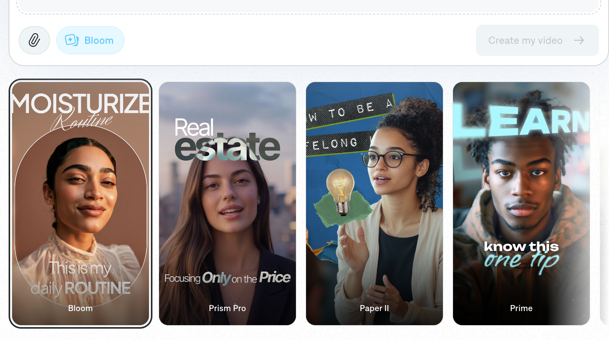

Captions built an impressive AI editing suite — 20 million creators and businesses, 3 million monthly videos, as seen in The New York Times and Bloomberg. For creators who film their own footage and want AI to handle the editing, it solves a real problem. But the platform has structural limits that push a specific type of creator toward alternatives: the credit system, the mobile-first architecture, and the core assumption that you are starting from your own original footage. If you want to clone proven viral content rather than edit what you filmed, the tool you need is a different category entirely.
Captions earns its user base — the AI Edit styles are genuinely impressive, and the translation and dubbing features are among the best in their class. But four friction points consistently drive creators toward alternatives:

VidCloner is the strongest Captions alternative for TikTok creators who want to post viral content without filming original footage every time. Where Captions asks you to import your own video and then apply AI edits, VidCloner starts from a different premise: paste the URL of any viral TikTok or Instagram Reel and replace the actor with your custom avatar — matching the exact movements, timing, and energy of the original.
The practical difference is significant. Captions helps you edit better. VidCloner helps you skip the creative risk entirely by starting from content the algorithm has already validated. For TikTok affiliates, UGC creators, and personal brand operators who want consistent output without being in front of the camera constantly, the clone-first workflow compounds faster than the edit-first workflow.
CapCut is the most widely used free video editor among TikTok creators. Built by ByteDance (TikTok's parent company), it integrates directly with TikTok's drafts and trending templates. For creators who want a capable mobile and desktop editor without a subscription, CapCut covers trimming, captions, transitions, effects, and basic AI background removal — all at no cost on the free tier.
CapCut is an editing tool — it requires your own original footage to work with. If you want to clone an existing viral video and replace the presenter with your avatar, CapCut cannot do that. For creators who film regularly and want free editing with TikTok-native templates, CapCut is excellent. For creators who want to skip filming and clone proven viral formats, VidCloner is purpose-built for that workflow.
HeyGen is the strongest Captions alternative for creators who want AI-generated talking-head videos from a written script. With 300–1,500 stock AI avatars (depending on plan), 40+ language translations, and a polished template-driven workflow, HeyGen produces professional presenter videos without any filming. It is particularly well-suited for educational content, product explainers, and marketing videos that follow a scripted format.
HeyGen generates new video from scripts and templates — you write the words, HeyGen produces the presenter. VidCloner clones existing viral video — you find what works, VidCloner replicates it with your face. HeyGen has no concept of cloning from a URL or matching the exact energy of an existing TikTok trend. For script-to-video needs, HeyGen is strong. For viral-first TikTok content, VidCloner's workflow is faster and algorithmically safer.
Runway is a professional-grade AI video generation platform best known for its generative video models (Gen-3 Alpha) and advanced visual effects. It allows creators to generate video from text prompts, transform images into video, apply cinematic AI effects to footage, and remove backgrounds with high precision. Runway is the go-to tool for filmmakers, visual artists, and content creators who need generative AI video capabilities beyond standard editing.
Runway is a generative AI video creation tool — it generates visual content from prompts and effects. VidCloner is a cloning tool — it takes real viral video and replaces the person in it. The workflows are entirely different. Runway is powerful for creative filmmaking and AI art direction. VidCloner is purpose-built for the specific workflow TikTok creators need: find a viral video, replace the actor, post your version.
Descript is a podcast and video editing platform that converts audio and video into an editable transcript — you edit the text and the video updates automatically. It is particularly strong for interview content, podcasts, YouTube long-form videos, and any content where editing by transcript is faster than editing on a timeline. Descript also includes AI voice cloning (Overdub) for fixing spoken errors without re-recording.
Descript and VidCloner serve completely different use cases. Descript is for editing long-form spoken content by manipulating a text transcript. VidCloner is for cloning short-form viral social videos by replacing the presenter. If you are producing podcasts, interview content, or YouTube videos over three minutes, Descript is excellent. If you are producing TikTok and Instagram Reels content at volume using proven viral formats, VidCloner is the right tool.
| Rank | Tool | Best for | Pricing from |
|---|---|---|---|
| 1 | VidCloner | Viral video cloning & personal brand TikTok content | $19/month |
| 2 | CapCut | Free TikTok-native video editing | Free |
| 3 | HeyGen | AI avatar talking-head videos from scripts | $29/month |
| 4 | Runway | AI generative video creation and visual effects | Check their site |
| 5 | Descript | Podcast and long-form video editing via text | Check their site |
VidCloner lets you paste any viral TikTok or Instagram URL and replace the actor with your own avatar — no filming, no editing, no credit math. Plans from $19/month.
Try VidCloner Free